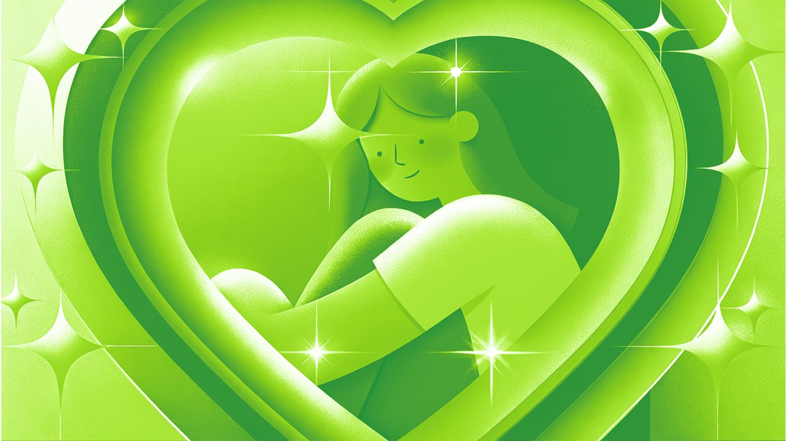
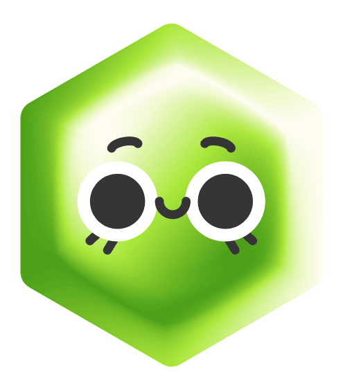
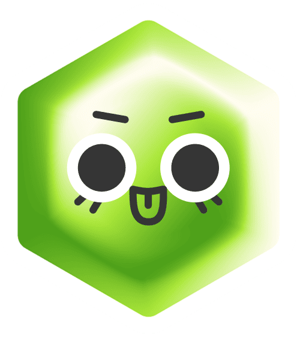

Шпаргалка
Давай начистоту: сколько раз ты ловил себя на мысли, что твои успехи — просто случайность? Что клиенты тебя переоценивают? Что вот-вот кто-то скажет: «Вы не похожи на специалиста»?
Расслабься — ты не один. Даже самые успешные дизайнеры иногда чувствуют себя самозванцами. Хорошая новость: это не значит, что ты плохой специалист. Это значит, что ты нормальный человек, который заботится о качестве своей работы.
Но если эти сомнения начинают мешать тебе брать интересные проекты, радоваться успехам или даже просто спать по ночам — давай разберемся, что с этим делать.
Почему дизайнеры так часто сомневаются?
Синдром самозванца — это внутреннее убеждение, что ты недостаточно хорош, что твой успех — дело случая, а не навыков. При этом объективных причин для сомнений может и не быть: портфолио растет, клиенты рекомендуют, отзывы — отличные... А внутри всё равно что-то шепчет: «Это просто удача, а не твоя заслуга».
Этот феномен впервые описали психотерапевты Полин Клэнс и Сюзан Аймс ещё в 1978 году. Они заметили: даже самые успешные люди могут не верить в свои достижения. Особенно это касается творческих профессий. В отличие от многих других специальностей, у нас нет четких критериев качества. Один клиент в восторге от твоего стиля, другой скажет: «Можно покреативнее?». Добавь к этому: перфекционизм, сравнение себя с другими, постоянный страх ошибки, и вуаля — мозг уверен: ты самозванец, который вот-вот будет разоблачён.
Но давай посмотрим правде в глаза:
- Никто не рождается «настоящим» дизайнером. Даже топовые дизайнеры начинали с кривых логотипов.
- Клиенты платят за решение их проблемы, а не за гениальность.
- Если бы ты действительно был плох, тебя бы давно «раскрыли».

Как перестать себя накручивать?
Первое, что нужно сделать — завести привычку фиксировать успехи. Записывай в заметки или блокнот всё, что у тебя хорошо получилось за последнее время: от благодарности клиента до укладывания в дедлайн. Перечитывай его, когда сомневаешься в себе. Это поможет тебе увидеть, как много ты уже сделал(а).
Не прячь черновики и промежуточные варианты. Наоборот — выкладывай в сторис или в портфолио провальные попытки и финальный результат. Это докажет тебе самому, что работа — это процесс, а не волшебство. А другие дизайнеры увидят, что ты учишься, ошибаешься и растешь.
Очень важно перестать сравнивать себя с другими. Вместо «У того дизайнера 50К подписчиков, а у меня только 100» спроси: «Что я могу сегодня, чего не мог месяц назад?». Если ты увереннее работаешь в Figma, лучше презентуешь работу или клиент оставил первый положительный отзыв — это уже прогресс. Рост — это не про то, чтобы догнать кого-то, а про то, чтобы стать лучше, чем ты был вчера.

Сомнения означают, что ты растешь — и это круто!
Что делать, когда страх парализует?
Разреши себе ошибаться. Ошибка — не конец карьеры, а повод научиться чему-то новому. Если заказчик не принял работу — не паникуй. Уточни, что именно не понравилось, исправь и запомни на будущее. Даже у топовых студий бывают провальные проекты.
Помни: клиенты — не эксперты. Они нанимают тебя, потому что ты разбираешься в дизайне лучше них. Если бы они знали, как сделать идеально — сделали бы сами.
Если сомнения стали постоянными и мешают работать:
- Поговори с коллегами — скорее всего, они тоже через это проходили.
- Обратись к психологу — это не слабость, а забота о себе.
- Напомни себе: если бы ты действительно был «ненастоящим», тебя бы давно разоблачили.
Главное, что нужно запомнить
Ты не самозванец. Ты просто человек, который учится и растет. И это нормально — сомневаться, ошибаться и иногда чувствовать себя неуверенно. Но если заказы есть, клиенты возвращаются, а работы в портфолио становятся круче — значит, ты на правильном пути.
Пусть твой голос внутри иногда шепчет тебе сомнения — не забывай, что ты уже многого достиг(ла). Просто продолжай делать то, что любишь. И время от времени напоминай себе: «Я справлюсь. Я уже делал это раньше».

Посмотрим, что ты запомнил из статьи?
Пройти тест
10.05.2025